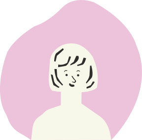

わたしの
ことABOUT

前職は刺繍機オペレーターとして、数多くのデザインやデータを扱ってきました。形や色が少し変わるだけで印象が大きく変わることに面白さを感じ、デザインの道を志し、職業訓練校でWEBデザインを学びました。
訓練校修了後は行政の事務職に従事し、Excel・Wordの知識を深めました。業務ではチラシ制作などのデザインを担当する機会も多くありました。
また、業務とは別に、子ども向けイベントの撮影や名刺制作を受注したほか、ボランティアとしてこども食堂の撮影も行いました。
これまでの経験を活かし、見る人に伝わりやすく、心に残るデザインと写真を届けたいとおもっています。